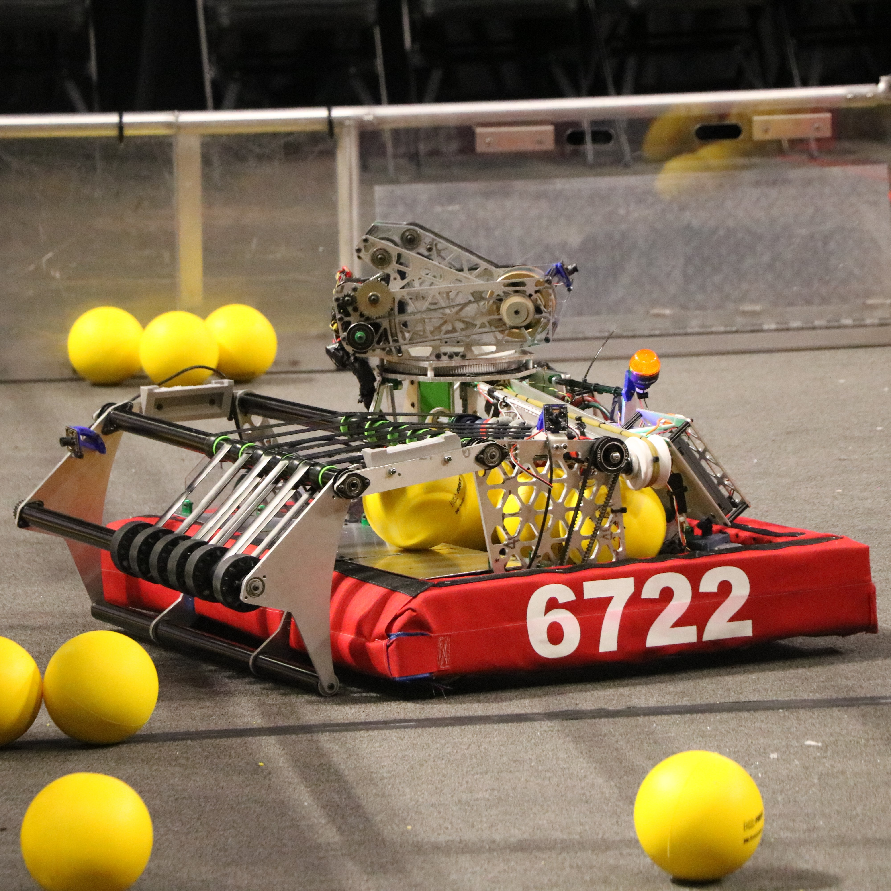

Our robots / Sherman (2026)
Sherman, our 2026 Robot

About Sherman
Sherman competed in Orlando then Tallahassee for the 2026 Rebuilt game. The 2026 Rebuilt game started with 30 seconds of autonomous period where robots were free to move around the field, picking up balls and shooting them into their respective baskets and each ball gives a point. The autonomous period is only code controlled meaning no robot can be controlled by humans. Then there is 1 minute and 20 second period of the robots being controlled by humans. In the final 30 seconds — also known as the endgame, the robots can climb a ladder that is placed on their respective side. There are 500 balls on the field and the robots must score in their goals when the goal is turned on, ergo, it turns on/off every ~30 seconds starting from the end of the autonomous period until the start of the end game.